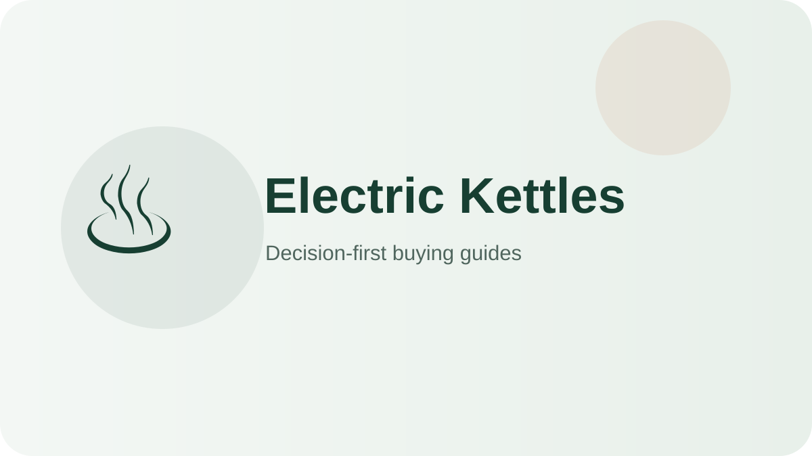

Electric Kettles hub
Electric Kettles reviews, comparisons and buying guides.
Choose electric kettles by boil speed, temperature control, pour accuracy, handle comfort, and scale cleanup—not by feature count alone.

Shortlist
Recommended starting points
These products cover distinct use cases so you can quickly rule in—or rule out—the right format.

Best tea-friendly all-rounder
Cuisinart PerfecTemp CPK-17P1
Different tea temperatures matter to you.
Check on Amazon
Best value gooseneck
COSORI Gooseneck Electric Kettle 0.8L
You want pour-over control without premium pricing.
Check on Amazon
Best large variable-temp option
OXO Brew Adjustable Temperature Kettle
You want precision and more volume.
Check on Amazon
Best budget fast-boil kettle
Hamilton Beach 1.7L Electric Kettle 40880G
You only need boiling water cheaply.
Check on AmazonBest pour-over workhorse kettle
Bonavita 1.0L Variable Temperature Gooseneck BV382510V
You brew pour-over or precise tea and want café-standard control.
Check on AmazonBest high-volume budget boiler
Mueller Ultra Kettle 1.8L SpeedBoil
You want fast, big-capacity boiling water at a minimal price.
Check on AmazonAll guides
Deep-dive Electric Kettles content
Overall
Best Electric Kettles for Most People in 2026
A decision-first shortlist for everyday buyers, with clear trade-offs instead of feature-count rankings.
Read guide →Small
Best Electric Kettles for Small Spaces
Compact picks and space-saving buying rules for apartments, dorms and crowded counters.
Read guide →Family
Best Electric Kettles for Families and Batch Use
Larger-capacity options and the capacity rules that matter when several people share one appliance.
Read guide →Budget
Best Electric Kettles Around $100
Value-focused picks that prioritize the features you actually use and skip expensive extras.
Read guide →Guide
Electric Kettles Buying Guide: What Actually Matters
A practical guide to sizing, features, cleanup, durability and avoiding overbuying.
Read guide →Compare
Electric Kettles Comparison Guide: How to Choose Between Similar Models
A side-by-side decision framework for separating meaningful differences from marketing noise.
Read guide →New original guide
How to Clean and Maintain an Electric Kettle: The Complete Care Guide
A practical after-use routine, deep-cleaning schedule and part-replacement plan that keeps an electric kettle performing like new for years.
Read guide →New original guide
7 Electric Kettle Buying Mistakes to Avoid (and What to Do Instead)
The most common ways buyers overspend or under-buy when choosing an electric kettle, with the decision rule that prevents each one.
Read guide →New original guide
Premium vs Budget Electric Kettles: Where the Extra Money Actually Goes
A line-item look at what higher prices buy in electric kettles, when the upgrade pays off daily, and when the budget pick is the smarter move.
Read guide →